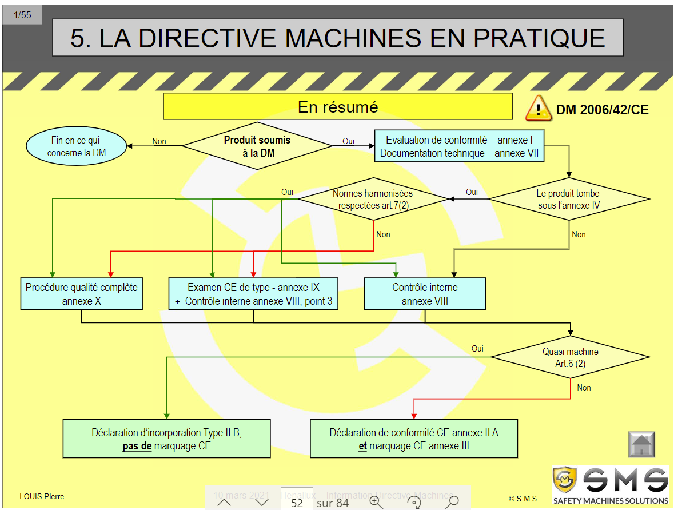

Sécurité machine
Table of Contents
Les directives
- Diréctives européennes imposés sur env. 250mil
- 1987: institutions bases sécurité santé pour toute l'europes
- Création de l'acte unique composé de 2 articles:
- 100a: directives économiques pour les fabriquants
- 118a: directives sociales pour les travailleurs
- Création de l'acte unique composé de 2 articles:
- Tout les européens doivent être en sécurité sur le monde du travail
- Tous les pays ne l'ont pas encore adoptés
- Directives économiques: sécurité au niveau des produits pour l'harmonisation européennes
- N'avoir qu'une seule harmonisation
- Tous les pays les adoptent
- Directives économiques: sécurité au niveau des produits pour l'harmonisation européennes
Les deux directives ne s'appliquent pas aux mêmes personnes (fabriquant ou utilisateur)
Directives sociales
- DIréctive mères: Sécurité et santé dans le milieu du travail
- Utilisation d'EPI (pour l'utilisateur)
- Zones de travail etc
Directives économiques
- Directives des produits
- Diréctive machine
- Ascenceurs
- Jouets etc
- Label CE
- Production d'outils d'EPI (pour le fabriquant)
La directive machine
Objectifs
- Eviter les différcences entre les pays
- Exculsivement directives minimales
- Protection des hommmes, biens, et environnement et les animaux
S'applique
- S'applique à tous les fabriquants de machines
- A tous les constructeurs européens
- Aux mandataires des constructeurs étangers (représenants) (on peut devenir mandataire sans le savoir)
- Attention l'importateur de la machine peut devenir mandataire
- Attention s'applique aussi aux machines faite "maison" on devient alors constructeur
- Retranscrit dans tous les pays (nul n'est censé ignorer la loi)
- Peut amener à des sanctions économiques en cas de problème (retirer du marché, rappels)
- Sanctions pénales possibles aussi (amendes, prison etc), même pour l'opérateur s'il est réspnsable
- IL FAUT DONC CORRECTEMENT FAIRE SON TRAVAIL QU'ON SOIT FABRIQUANT OU UTILISATEUR
Droit de pays
- L'état et la directive européenne ne sont pas toujours d'accords (mais souvent identiques)
Première directive machine
- 2006/42: Pas restranscrite dans tous les pays au même moment
- Régelement européen prévu pour 2023
- Avant 1/1/93: Constituer un dossier machine en fonction du pays (et pour chaque pays)
- Après 1/1/93: Choix entre dossier machine en fonction du pays OU dossier respectant la directive européenne
- Parès 1/1/95: Directive européenne obligatioire
Directive équipement de travail
- Sécurité et Santé des travailleurs
- Assure que l'employeur fourni des machines et installations et éqipements de travail conforme et surs
- Obligateurs, toujours restranscrite dans les droits belges
- Soumis au contrôle par l'inspection du travail régulière
- Dernière 2007/CE
Quoi faire quand on recontre une machines
- Toutes les machines doivent être conformes a la directive machine au 1/1/97
- Vérifier que tout est bien conforme
- Date de première mise en service en union européenne fait foi (attention en importation)
- Si la machine est mise en service avant 1/1/95, elle doit respecter la directive équipement de travail.
- La directive reprend 19 points à s'assurer de la conformité
Evolution
- La directive machine est régulièrement modifiée
- Chaque évolution donne du temps (24 mois) pour chaque pays à l'implémenter
- Il y a également un délai d'application (18 mois en plus des 24 mois)
Compostion de la directive
- 63 pages
- 30 points administratifs (pas techinques)
- 29 points juridiques (pour les avocats)
- 12 annexes qui donnent les points techniques.
Plusieurs directives
- 5 directices fréquentes:
- Directive machine
- DIrective basse tension
- Directive compatibilité électromagnétique
- Directive PED et équipements sous pression
- Directive ATEX (fabriquant de l'élément pneumatique)
Champ d'application
- S'assurer que l'on se trouve dans le champ d'application des directives
- Il se pourrait qu'on y rentre pas (et donc pas besoin d'appliquer)
- Consulter les articles 1 et 2 de la directive européenne pour voir le champ d'application
- Guide de 480 pages qui reprend tout en détail en cas de doute
Quasi-machine
- Système qui obéit a la définition d'une machine mais qui ne fait aucune fontion seule
- Reliée à un autre système qui rendrait le système utile
Articles a lire
- Article 1
- Article 2
- Article 5
- Article 12
- Article 13
Annexe 1: Exigences essentielles
- Annexe I: Tous doit respecter les exigences essentielles
- Le fabriquent doit faire une évaluation des risques, et elle doit être suivie dans la conception
- Il faut d'abord effectuer l'analyse des risques AVANT de la concenvoir et non après
- Il faut prendre en compte toutes les phases de vie de la machine jusque sa mise au rebus et les risques spécifiques qui s'y rapportent
- L'intégration de la sécurité doit se faire dans le processus de construction et dans un ordre précis
- Ordre: Eliminer les risques tant que possible, puis diminuer au maximum les risques dans la conception, puis prendre des mesures de protection et enfin prévenir les utilisateurs
- Exemple: limiter le couple moteur des engins qui n'en ont pas besoinExemple: limiter le couple moteur des engins qui n'en ont pas besoin.
- Contrôles periodiques à réaliser
Descriptions des points
- Exigences essentielles de santé et sécurité
- Généralités
- Systèmes de commande
- Mesure de protections
- etc
- Exigences essentielles santé pour certains catégories (alimentaire, et cosmétiques)
- Exigences essentielles pour la mobilité des machines
- Exigences essentielles pout les opérations de levage
- Exigences essentielles pour les opérations sous-terraines
- Exigences essentielles pour les machines de levage de personnes
Annexe 2: Déclaration de conformité
- Déclaration conformité machine -> marquage CE
- Déclaration intégration pour quasi-machine -> pas de marquage CE
Annexe 3: Marquage CE
- Conformité du marquage CE (dimmensions et graphique pour éviter la contrebande)
- Passeport européen (assure le respect de la directive pour la machine)
- Attention: le marquage est auto-certifié (le plus souvent), donc pas un gage de qualité ni une garantie
- Obligatoire sur les machines en Europe
- Toujours vérifier la déclaration de conformité
- Si la machine est présente dans l'annexe 4, en fonction de la réponse voir les procédures spécifiques
- Il peut être nécéssaire dans certains cas de faire appel à un organisme notifié, qui à les compétences pour contrôler certains produits
- L'organisme de contrôle prend aussi la résponsabilité des machines
Autre annexes
- Annexe 5: Liste des composants de sécurité de l'annexe 2
- Annexe 6: Notice d'assemblage de la quasi-machine
- Annexe 7: Dossier techniques: Assure la bonne foi du fabriquant avec l'appréciation des risques (uniquement pour l'instance judiciaire)
- Annexe 8, 9 et 10: Conformité, assurance et notifications
- Annexe 11: Critère minimum
Résumé
- Directives machine obligatioire dans le pays et l'UE
- Ne contient que les exigences essentielles
- Normes pas obligatoires mais le suivi donne une présomption de conformité
Voir tableau résumé produit soumis a la directive machine

Figure 1: Tableau résumé
Danger ou risque
Danger
Situation pouvant amener à des blessures ou d'autres conséquences néfastes
Risque
Contact avec un danger pouvant amener à des blessures ou autres conséquences néfastes
Appréciation des risques
- Sécurité au travail
- Ergonomie
- Hygiène
- Charge psycho-sociales
- Machines
- Produits dangereux etc
Méthodes
- Checklists
- Entreprise
- Machines
- HAZOP
- Ishikawa
- HEEPO
Beaucoup de méthodes, tous ayant pour but de ne rien oublier
Estimation des risques
- Donner des valeurs quantitatives quant aux risques
- Exemples: Tableau à deux entrées ou norme ISO-12100 (utilisé le plus souvent)
- Pas obligatoire, mais recommandé pour donner des priorités sur l'intervention
- Permet d'évaluer l'éfficacité des mesures
- Si ISO-12100 alors commencer par la fin (plus motivant)
Normes
- Les normes étaient standardisés par pays, donc on à adopté les normes européennes (EN). Acheter les normes EN et pas pr EN.
- Norme EN ISO doublement reconnue
- Environ 1600 normes actuellement en service
- Certaines normes sont fondamentales (générales A), de groupe (type B), spécifiques pour certaines machines (type C)
- On est pas obligé de les suivre
- Plus fréquentes: 12100, 14119 etc
Norme 13849
- Cette norme indique le système de commande relatifs à la sécurité
- Elle permet de s'assurer que les commandes des systèmes de sécurté sont OK
- Déterminer le Plr pour évaluer les performances requis des systèmes de contrôle
- 4 catégories à resecter concernant le nombre de contacts et autre (cat B, cat 1 monocanal (1 éprouvé), cat 2 monocanal mais autocontrôle nécéssaire avec relai de sécu)
- Catégorie 3 et 4 ajoutent de la redondance, double canal (un défaut ne peut pas perdre la fonction de sécu) et cat 4 détéction et très poussé
- Calcul du temps pour avoir une défaillance (3 - 100 ans) dans le système de sécurité